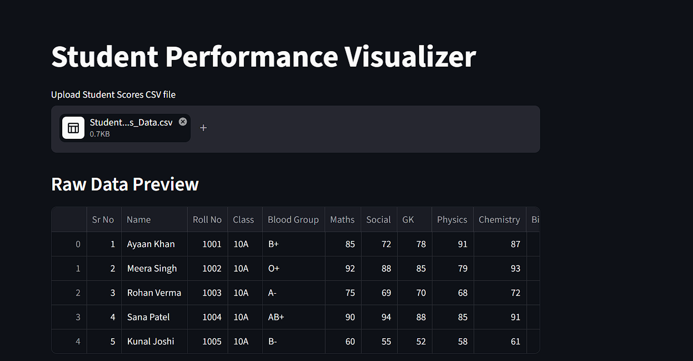

AWS CI/CD Portfolio Deployment
- Deployed a portfolio website on Amazon S3 with static website hosting.
- Built a GitHub Actions workflow in YAML that deploys updates to S3 on every push to main.
- Configured AWS IAM permissions and GitHub Secrets for secure GitHub-to-S3 authentication and automated file sync.